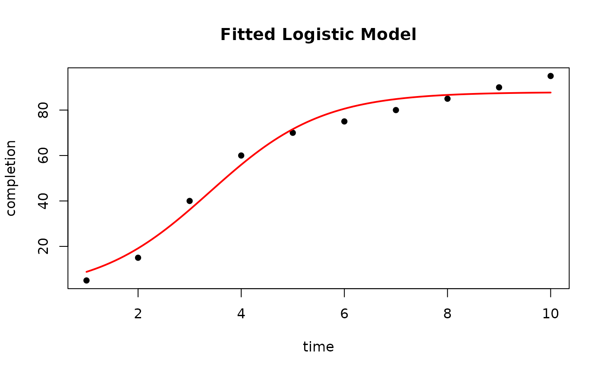
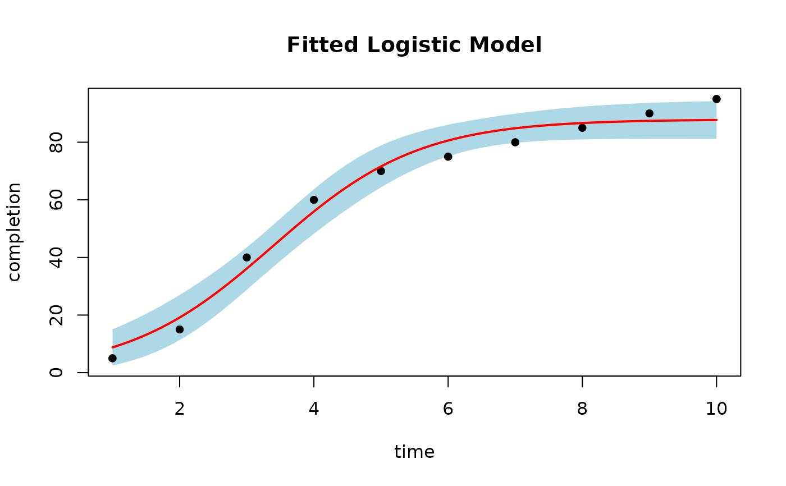
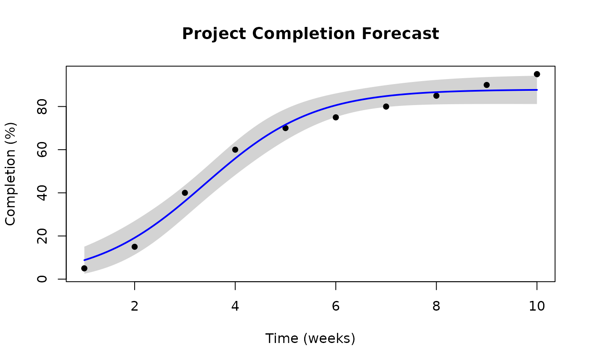

This function creates a base R plot of a fitted sigmoidal model with the original data points, fitted curve, and optional confidence bounds.
Usage
plot_sigmoidal(
fit,
data,
x_col,
y_col,
model_type,
conf_level = NULL,
n_points = 100,
main = NULL,
xlab = NULL,
ylab = NULL,
line_col = "red",
ci_col = "lightblue",
pch = 16,
...
)Arguments
- fit
A fitted sigmoidal model object from fit_sigmoidal.
- data
The original data frame used to fit the model.
- x_col
The name of the x (time) column in the data.
- y_col
The name of the y (completion) column in the data.
- model_type
The type of model (pearl, gompertz, or logistic).
- conf_level
Optional confidence level for confidence bounds (e.g., 0.95 for 95 If NULL (default), no confidence bounds are plotted.
- n_points
Number of points to use for the fitted curve (default 100).
- main
Plot title. If NULL, a default title is generated.
- xlab
X-axis label. If NULL, uses x_col.
- ylab
Y-axis label. If NULL, uses y_col.
- line_col
Color for the fitted curve (default "red").
- ci_col
Color for the confidence band (default "lightblue").
- pch
Point character for data points (default 16).
- ...
Additional arguments passed to plot().
Examples
# Set up a data frame of time and completion percentage data
data <- data.frame(time = 1:10, completion = c(5, 15, 40, 60, 70, 75, 80, 85, 90, 95))
# Fit a logistic model to the data.
fit <- fit_sigmoidal(data, "time", "completion", "logistic")
# Plot the fitted model
plot_sigmoidal(fit, data, "time", "completion", "logistic")

# Plot with 95% confidence bounds
plot_sigmoidal(fit, data, "time", "completion", "logistic", conf_level = 0.95)

# Customize the plot
plot_sigmoidal(fit, data, "time", "completion", "logistic",
conf_level = 0.95,
main = "Project Completion Forecast",
xlab = "Time (weeks)",
ylab = "Completion (%)",
line_col = "blue",
ci_col = "lightgray"
)
